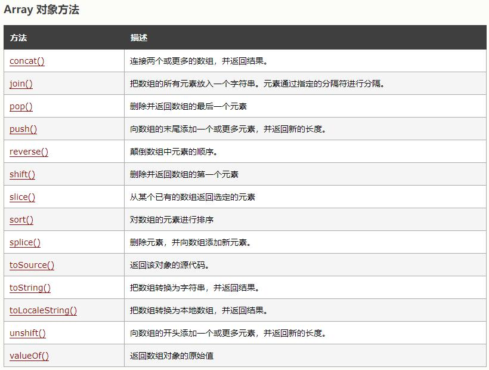

<!DOCTYPE html>


<html lang="ch">


<head>
  <meta charset="utf-8" />
   
  <meta name="keywords" content="life" />
   
  <meta name="description" content="blog for LiMingHua" />
  
  <meta name="viewport" content="width=device-width, initial-scale=1, maximum-scale=1" />
  <title>
    vue数组sort函数 |  岛
  </title>
  <meta name="generator" content="hexo-theme-ayer">
  
  <link rel="shortcut icon" href="/favicon.ico" />
  
  
<link rel="stylesheet" href="/dist/main.css">

  
<link rel="stylesheet" href="https://cdn.jsdelivr.net/gh/Shen-Yu/cdn/css/remixicon.min.css">

  
<link rel="stylesheet" href="/css/custom.css">

  
  
<script src="https://cdn.jsdelivr.net/npm/pace-js@1.0.2/pace.min.js"></script>

  
  

  

<link rel="alternate" href="/atom.xml" title="岛" type="application/atom+xml">
</head>

</html>

<body>
  <div id="app">
    <main class="content on">
      <section class="outer">
  <article id="post-vue数组sort函数" class="article article-type-post" itemscope
  itemprop="blogPost" data-scroll-reveal>

  <div class="article-inner">
    
    <header class="article-header">
       
<h1 class="article-title sea-center" style="border-left:0" itemprop="name">
  vue数组sort函数
</h1>
 

    </header>
    

    
    <div class="article-meta">
      <a href="/2021/01/02/vue%E6%95%B0%E7%BB%84sort%E5%87%BD%E6%95%B0/" class="article-date">
  <time datetime="2021-01-02T05:44:03.000Z" itemprop="datePublished">2021-01-02</time>
</a>
      
  <div class="article-category">
    <a class="article-category-link" href="/categories/%E6%8A%80%E6%9C%AF/">技术</a>
  </div>

      
      
<div class="word_count">
    <span class="post-time">
        <span class="post-meta-item-icon">
            <i class="ri-quill-pen-line"></i>
            <span class="post-meta-item-text"> Word count:</span>
            <span class="post-count">2.2k</span>
        </span>
    </span>

    <span class="post-time">
        &nbsp; | &nbsp;
        <span class="post-meta-item-icon">
            <i class="ri-book-open-line"></i>
            <span class="post-meta-item-text"> Reading time≈</span>
            <span class="post-count">9 min</span>
        </span>
    </span>
</div>

      
    </div>
    

    
    
    <div class="tocbot"></div>


    

    
    <div class="article-entry" itemprop="articleBody">
      
      

      
      <h2 id="sort"><a href="#sort" class="headerlink" title="sort()"></a>sort()</h2><blockquote>
<p>arrayObject.sort(sortby)</p>
</blockquote>
<ul>
<li>sortby:可选。规定排序顺序。必须是函数</li>
<li>返回值:对数组的引用。请注意，数组在原数组上进行排序，不生成副本</li>
<li>如果调用该方法时没有使用参数，将按字母顺序对数组中的元素进行排序，说得更精确点，是按照字符编码的顺序进行排序。要实现这一点，首先应把数组的元素都转换成字符串（如有必要），以便进行比较</li>
<li>如果想按照其他标准进行排序，就需要提供比较函数，该函数要比较两个值，然后返回一个用于说明这两个值的相对顺序的数字。比较函数应该具有两个参数 a 和 b，其返回值如下：<ul>
<li>若 a 小于 b，在排序后的数组中 a 应该出现在 b 之前，则返回一个小于 0 的值。</li>
<li>若 a 等于 b，则返回 0。</li>
<li>若 a 大于 b，则返回一个大于 0 的值。</li>
</ul>
</li>
</ul>
<figure class="highlight javascript"><table><tr><td class="gutter"><pre><span class="line">1</span><br><span class="line">2</span><br><span class="line">3</span><br><span class="line">4</span><br><span class="line">5</span><br><span class="line">6</span><br><span class="line">7</span><br><span class="line">8</span><br><span class="line">9</span><br><span class="line">10</span><br><span class="line">11</span><br><span class="line">12</span><br><span class="line">13</span><br><span class="line">14</span><br><span class="line">15</span><br><span class="line">16</span><br><span class="line">17</span><br><span class="line">18</span><br><span class="line">19</span><br><span class="line">20</span><br><span class="line">21</span><br><span class="line">22</span><br></pre></td><td class="code"><pre><span class="line"></span><br><span class="line"><span class="function"><span class="keyword">function</span> <span class="title">sortNumber</span>(<span class="params">a,b</span>)</span></span><br><span class="line"><span class="function"></span>&#123;</span><br><span class="line"><span class="keyword">return</span> a - b</span><br><span class="line">&#125;</span><br><span class="line"></span><br><span class="line"><span class="keyword">var</span> arr = <span class="keyword">new</span> <span class="built_in">Array</span>(<span class="number">6</span>)</span><br><span class="line">arr[<span class="number">0</span>] = <span class="string">&quot;10&quot;</span></span><br><span class="line">arr[<span class="number">1</span>] = <span class="string">&quot;5&quot;</span></span><br><span class="line">arr[<span class="number">2</span>] = <span class="string">&quot;40&quot;</span></span><br><span class="line">arr[<span class="number">3</span>] = <span class="string">&quot;25&quot;</span></span><br><span class="line">arr[<span class="number">4</span>] = <span class="string">&quot;1000&quot;</span></span><br><span class="line">arr[<span class="number">5</span>] = <span class="string">&quot;1&quot;</span></span><br><span class="line"></span><br><span class="line"><span class="built_in">document</span>.write(arr + <span class="string">&quot;&lt;br /&gt;&quot;</span>)</span><br><span class="line"><span class="built_in">document</span>.write(arr.sort(sortNumber))</span><br><span class="line"></span><br><span class="line"></span><br><span class="line"><span class="comment">//输出：</span></span><br><span class="line"><span class="number">10</span>,<span class="number">5</span>,<span class="number">40</span>,<span class="number">25</span>,<span class="number">1000</span>,<span class="number">1</span></span><br><span class="line"><span class="number">1</span>,<span class="number">5</span>,<span class="number">10</span>,<span class="number">25</span>,<span class="number">40</span>,<span class="number">1000</span></span><br><span class="line"></span><br></pre></td></tr></table></figure>
<figure class="highlight javascript"><table><tr><td class="gutter"><pre><span class="line">1</span><br><span class="line">2</span><br><span class="line">3</span><br><span class="line">4</span><br><span class="line">5</span><br><span class="line">6</span><br><span class="line">7</span><br><span class="line">8</span><br><span class="line">9</span><br><span class="line">10</span><br><span class="line">11</span><br><span class="line">12</span><br><span class="line">13</span><br><span class="line">14</span><br><span class="line">15</span><br><span class="line">16</span><br><span class="line">17</span><br><span class="line">18</span><br><span class="line">19</span><br><span class="line">20</span><br><span class="line">21</span><br><span class="line">22</span><br><span class="line">23</span><br><span class="line">24</span><br><span class="line">25</span><br><span class="line">26</span><br><span class="line">27</span><br><span class="line">28</span><br><span class="line">29</span><br><span class="line">30</span><br><span class="line">31</span><br><span class="line">32</span><br><span class="line">33</span><br><span class="line">34</span><br><span class="line">35</span><br><span class="line">36</span><br><span class="line">37</span><br><span class="line">38</span><br><span class="line">39</span><br><span class="line">40</span><br><span class="line">41</span><br></pre></td><td class="code"><pre><span class="line"><span class="comment">//时间排序正序</span></span><br><span class="line"><span class="function"><span class="title">ascSortTime</span>(<span class="params">type</span>)</span>&#123;</span><br><span class="line">  <span class="built_in">console</span>.log(<span class="built_in">this</span>.dataList[<span class="number">0</span>].new_applydate)</span><br><span class="line">  <span class="built_in">this</span>.dataList.sort(<span class="built_in">this</span>.ascCompareTime(type));</span><br><span class="line"></span><br><span class="line">&#125;,</span><br><span class="line"><span class="comment">//时间排序倒序</span></span><br><span class="line"><span class="function"><span class="title">descSortTime</span>(<span class="params">type</span>)</span>&#123;</span><br><span class="line">  <span class="built_in">console</span>.log(<span class="built_in">this</span>.dataList[<span class="number">0</span>].new_applydate)</span><br><span class="line">  <span class="built_in">this</span>.dataList.sort(<span class="built_in">this</span>.descCompareTime(type));</span><br><span class="line"></span><br><span class="line">&#125;,</span><br><span class="line"><span class="comment">//比较时间大小</span></span><br><span class="line"><span class="function"><span class="title">ascCompareTime</span>(<span class="params">attr</span>)</span>&#123;</span><br><span class="line">  <span class="keyword">return</span> <span class="function"><span class="keyword">function</span>(<span class="params">a,b</span>)</span>&#123;</span><br><span class="line">    <span class="keyword">var</span> val1 = a[attr];</span><br><span class="line">    <span class="keyword">var</span> val2 = b[attr];</span><br><span class="line">    <span class="comment">// return val2-val1;</span></span><br><span class="line">    <span class="keyword">let</span> dates1 = <span class="keyword">new</span> <span class="built_in">Date</span>(val1);</span><br><span class="line">    <span class="keyword">let</span> dates2 = <span class="keyword">new</span> <span class="built_in">Date</span>(val2);</span><br><span class="line">    <span class="keyword">if</span> (dates1 &gt; dates2) &#123;</span><br><span class="line">      <span class="keyword">return</span> <span class="number">1</span></span><br><span class="line">    &#125; <span class="keyword">else</span> &#123;</span><br><span class="line">      <span class="keyword">return</span> -<span class="number">1</span></span><br><span class="line">    &#125;</span><br><span class="line">  &#125;</span><br><span class="line">&#125;,</span><br><span class="line"><span class="comment">//比较时间大小</span></span><br><span class="line"><span class="function"><span class="title">descCompareTime</span>(<span class="params">attr</span>)</span>&#123;</span><br><span class="line">  <span class="keyword">return</span> <span class="function"><span class="keyword">function</span>(<span class="params">a,b</span>)</span>&#123;</span><br><span class="line">    <span class="keyword">var</span> val1 = a[attr];</span><br><span class="line">    <span class="keyword">var</span> val2 = b[attr];</span><br><span class="line">    <span class="keyword">let</span> dates1 = <span class="keyword">new</span> <span class="built_in">Date</span>(val1);</span><br><span class="line">    <span class="keyword">let</span> dates2 = <span class="keyword">new</span> <span class="built_in">Date</span>(val2);</span><br><span class="line">    <span class="keyword">if</span> (dates1 &gt; dates2) &#123;</span><br><span class="line">      <span class="keyword">return</span> -<span class="number">1</span></span><br><span class="line">    &#125; <span class="keyword">else</span> &#123;</span><br><span class="line">      <span class="keyword">return</span> <span class="number">1</span></span><br><span class="line">    &#125;</span><br><span class="line">  &#125;</span><br><span class="line">&#125;,</span><br></pre></td></tr></table></figure>
<h2 id="数组对象其他方法"><a href="#数组对象其他方法" class="headerlink" title="数组对象其他方法"></a>数组对象其他方法</h2><p></p>
<h3 id="arrayObject-concat-arrayX-arrayX-……-arrayX"><a href="#arrayObject-concat-arrayX-arrayX-……-arrayX" class="headerlink" title="arrayObject.concat(arrayX,arrayX,……,arrayX)"></a>arrayObject.concat(arrayX,arrayX,……,arrayX)</h3><blockquote>
<p>用于连接两个或多个数组,该方法不会改变现有的数组，而仅仅会返回被连接数组的一个副本<br>参数：arrayX。必需。该参数可以是具体的值，也可以是数组对象。可以是任意多个。</p>
</blockquote>
<figure class="highlight javascript"><table><tr><td class="gutter"><pre><span class="line">1</span><br><span class="line">2</span><br><span class="line">3</span><br><span class="line">4</span><br><span class="line">5</span><br><span class="line">6</span><br><span class="line">7</span><br><span class="line">8</span><br><span class="line">9</span><br><span class="line">10</span><br><span class="line">11</span><br><span class="line">12</span><br><span class="line">13</span><br><span class="line">14</span><br><span class="line">15</span><br><span class="line">16</span><br><span class="line">17</span><br><span class="line">18</span><br><span class="line">19</span><br><span class="line">20</span><br><span class="line">21</span><br></pre></td><td class="code"><pre><span class="line"><span class="keyword">var</span> a = [<span class="number">1</span>,<span class="number">2</span>,<span class="number">3</span>];</span><br><span class="line"><span class="built_in">document</span>.write(a.concat(<span class="number">4</span>,<span class="number">5</span>));</span><br><span class="line"></span><br><span class="line"><span class="comment">//输出</span></span><br><span class="line"><span class="number">1</span>,<span class="number">2</span>,<span class="number">3</span>,<span class="number">4</span>,<span class="number">5</span></span><br><span class="line"></span><br><span class="line"></span><br><span class="line"><span class="keyword">var</span> arr = <span class="keyword">new</span> <span class="built_in">Array</span>(<span class="number">3</span>)</span><br><span class="line">arr[<span class="number">0</span>] = <span class="string">&quot;George&quot;</span></span><br><span class="line">arr[<span class="number">1</span>] = <span class="string">&quot;John&quot;</span></span><br><span class="line">arr[<span class="number">2</span>] = <span class="string">&quot;Thomas&quot;</span></span><br><span class="line"></span><br><span class="line"><span class="keyword">var</span> arr2 = <span class="keyword">new</span> <span class="built_in">Array</span>(<span class="number">3</span>)</span><br><span class="line">arr2[<span class="number">0</span>] = <span class="string">&quot;James&quot;</span></span><br><span class="line">arr2[<span class="number">1</span>] = <span class="string">&quot;Adrew&quot;</span></span><br><span class="line">arr2[<span class="number">2</span>] = <span class="string">&quot;Martin&quot;</span></span><br><span class="line"></span><br><span class="line"><span class="built_in">document</span>.write(arr.concat(arr2))</span><br><span class="line"></span><br><span class="line"><span class="comment">//输出</span></span><br><span class="line">George,John,Thomas,James,Adrew,Martin</span><br></pre></td></tr></table></figure>

<h3 id="arrayObject-join-separator"><a href="#arrayObject-join-separator" class="headerlink" title="arrayObject.join(separator)"></a>arrayObject.join(separator)</h3><blockquote>
<p>用于连接两个或多个数组,该方法不会改变现有的数组，而仅仅会返回被连接数组的一个副本<br>join() 方法用于把数组中的所有元素放入一个字符串。<br>元素是通过指定的分隔符(separator)进行分隔的。<br>separator:可选。指定要使用的分隔符。如果省略该参数，则使用逗号作为分隔符。</p>
</blockquote>
<figure class="highlight javascript"><table><tr><td class="gutter"><pre><span class="line">1</span><br><span class="line">2</span><br><span class="line">3</span><br><span class="line">4</span><br><span class="line">5</span><br><span class="line">6</span><br><span class="line">7</span><br><span class="line">8</span><br><span class="line">9</span><br><span class="line">10</span><br><span class="line">11</span><br><span class="line">12</span><br><span class="line">13</span><br><span class="line">14</span><br><span class="line">15</span><br><span class="line">16</span><br><span class="line">17</span><br><span class="line">18</span><br><span class="line">19</span><br><span class="line">20</span><br><span class="line">21</span><br><span class="line">22</span><br></pre></td><td class="code"><pre><span class="line"></span><br><span class="line"><span class="keyword">var</span> arr = <span class="keyword">new</span> <span class="built_in">Array</span>(<span class="number">3</span>)</span><br><span class="line">arr[<span class="number">0</span>] = <span class="string">&quot;George&quot;</span></span><br><span class="line">arr[<span class="number">1</span>] = <span class="string">&quot;John&quot;</span></span><br><span class="line">arr[<span class="number">2</span>] = <span class="string">&quot;Thomas&quot;</span></span><br><span class="line"></span><br><span class="line"><span class="built_in">document</span>.write(arr.join())</span><br><span class="line"></span><br><span class="line"><span class="comment">//输出</span></span><br><span class="line">George,John,Thomas</span><br><span class="line"></span><br><span class="line"></span><br><span class="line"><span class="keyword">var</span> arr = <span class="keyword">new</span> <span class="built_in">Array</span>(<span class="number">3</span>)</span><br><span class="line">arr[<span class="number">0</span>] = <span class="string">&quot;George&quot;</span></span><br><span class="line">arr[<span class="number">1</span>] = <span class="string">&quot;John&quot;</span></span><br><span class="line">arr[<span class="number">2</span>] = <span class="string">&quot;Thomas&quot;</span></span><br><span class="line"></span><br><span class="line"><span class="built_in">document</span>.write(arr.join(<span class="string">&quot;.&quot;</span>))</span><br><span class="line"></span><br><span class="line"><span class="comment">//输出</span></span><br><span class="line">George.John.Thomas</span><br><span class="line"></span><br></pre></td></tr></table></figure>
<h3 id="arrayObject-pop"><a href="#arrayObject-pop" class="headerlink" title="arrayObject.pop()"></a>arrayObject.pop()</h3><blockquote>
<p>pop() 方法用于删除并返回数组的最后一个元素。<br>pop() 方法将删除 arrayObject 的最后一个元素，把数组长度减 1，并且返回它删除的元素的值。如果数组已经为空，则 pop() 不改变数组，并返回 undefined 值。</p>
</blockquote>
<figure class="highlight javascript"><table><tr><td class="gutter"><pre><span class="line">1</span><br><span class="line">2</span><br><span class="line">3</span><br><span class="line">4</span><br><span class="line">5</span><br><span class="line">6</span><br><span class="line">7</span><br><span class="line">8</span><br><span class="line">9</span><br><span class="line">10</span><br><span class="line">11</span><br><span class="line">12</span><br><span class="line">13</span><br><span class="line">14</span><br><span class="line">15</span><br><span class="line">16</span><br><span class="line">17</span><br><span class="line">18</span><br><span class="line">19</span><br></pre></td><td class="code"><pre><span class="line"><span class="keyword">var</span> arr = <span class="keyword">new</span> <span class="built_in">Array</span>(<span class="number">3</span>)</span><br><span class="line">arr[<span class="number">0</span>] = <span class="string">&quot;George&quot;</span></span><br><span class="line">arr[<span class="number">1</span>] = <span class="string">&quot;John&quot;</span></span><br><span class="line">arr[<span class="number">2</span>] = <span class="string">&quot;Thomas&quot;</span></span><br><span class="line"></span><br><span class="line"><span class="built_in">document</span>.write(arr)</span><br><span class="line"></span><br><span class="line"><span class="built_in">document</span>.write(<span class="string">&quot;&lt;br /&gt;&quot;</span>)</span><br><span class="line"></span><br><span class="line"><span class="built_in">document</span>.write(arr.pop())</span><br><span class="line"></span><br><span class="line"><span class="built_in">document</span>.write(<span class="string">&quot;&lt;br /&gt;&quot;</span>)</span><br><span class="line"></span><br><span class="line"><span class="built_in">document</span>.write(arr)</span><br><span class="line"></span><br><span class="line">George,John,Thomas</span><br><span class="line">Thomas</span><br><span class="line">George,John</span><br><span class="line"></span><br></pre></td></tr></table></figure>
<h3 id="arrayObject-push-newelement1-…-newelementX"><a href="#arrayObject-push-newelement1-…-newelementX" class="headerlink" title="arrayObject.push(newelement1,….,newelementX)"></a>arrayObject.push(newelement1,….,newelementX)</h3><blockquote>
<p>push() 方法可向数组的末尾添加一个或多个元素，并返回新的长度。<br>push() 方法可把它的参数顺序添加到 arrayObject 的尾部。它直接修改 arrayObject，而不是创建一个新的数组。push() 方法和 pop() 方法使用数组提供的先进后出栈的功能</p>
</blockquote>
<h3 id="arrayObject-reverse"><a href="#arrayObject-reverse" class="headerlink" title="arrayObject.reverse()"></a>arrayObject.reverse()</h3><blockquote>
<p>reverse() 方法用于颠倒数组中元素的顺序。<br>该方法会改变原来的数组，而不会创建新的数组。</p>
</blockquote>
<figure class="highlight javascript"><table><tr><td class="gutter"><pre><span class="line">1</span><br><span class="line">2</span><br><span class="line">3</span><br><span class="line">4</span><br><span class="line">5</span><br><span class="line">6</span><br><span class="line">7</span><br><span class="line">8</span><br><span class="line">9</span><br><span class="line">10</span><br><span class="line">11</span><br></pre></td><td class="code"><pre><span class="line"><span class="keyword">var</span> arr = <span class="keyword">new</span> <span class="built_in">Array</span>(<span class="number">3</span>)</span><br><span class="line">arr[<span class="number">0</span>] = <span class="string">&quot;George&quot;</span></span><br><span class="line">arr[<span class="number">1</span>] = <span class="string">&quot;John&quot;</span></span><br><span class="line">arr[<span class="number">2</span>] = <span class="string">&quot;Thomas&quot;</span></span><br><span class="line"></span><br><span class="line"><span class="built_in">document</span>.write(arr + <span class="string">&quot;&lt;br /&gt;&quot;</span>)</span><br><span class="line"><span class="built_in">document</span>.write(arr.reverse())</span><br><span class="line"></span><br><span class="line"><span class="comment">//输出</span></span><br><span class="line">George,John,Thomas</span><br><span class="line">Thomas,John,George</span><br></pre></td></tr></table></figure>

<h3 id="arrayObject-shift"><a href="#arrayObject-shift" class="headerlink" title="arrayObject.shift()"></a>arrayObject.shift()</h3><blockquote>
<p>shift() 方法用于把数组的第一个元素从其中删除，并返回第一个元素的值<br>如果数组是空的，那么 shift() 方法将不进行任何操作，返回 undefined 值。请注意，该方法不创建新数组，而是直接修改原有的 arrayObject。</p>
</blockquote>
<h3 id="arrayObject-slice-start-end"><a href="#arrayObject-slice-start-end" class="headerlink" title="arrayObject.slice(start,end)"></a>arrayObject.slice(start,end)</h3><blockquote>
<p>slice() 方法可从已有的数组中返回选定的元素<br>返回一个新的数组，包含从 start 到 end （不包括该元素）的 arrayObject 中的元素。<br>该方法并不会修改数组，而是返回一个子数组。如果想删除数组中的一段元素，应该使用方法 Array.splice()。<br>可使用负值从数组的尾部选取元素。<br>如果 end 未被规定，那么 slice() 方法会选取从 start 到数组结尾的所有元素。<br>start    必需。规定从何处开始选取。如果是负数，那么它规定从数组尾部开始算起的位置。也就是说，-1 指最后一个元素，-2 指倒数第二个元素，以此类推。<br>end    可选。规定从何处结束选取。该参数是数组片断结束处的数组下标。如果没有指定该参数，那么切分的数组包含从 start 到数组结束的所有元素。如果这个参数是负数，那么它规定的是从数组尾部开始算起的元素。</p>
</blockquote>
<figure class="highlight javascript"><table><tr><td class="gutter"><pre><span class="line">1</span><br><span class="line">2</span><br><span class="line">3</span><br><span class="line">4</span><br><span class="line">5</span><br><span class="line">6</span><br><span class="line">7</span><br><span class="line">8</span><br><span class="line">9</span><br><span class="line">10</span><br><span class="line">11</span><br><span class="line">12</span><br><span class="line">13</span><br><span class="line">14</span><br><span class="line">15</span><br><span class="line">16</span><br></pre></td><td class="code"><pre><span class="line"><span class="keyword">var</span> arr = <span class="keyword">new</span> <span class="built_in">Array</span>(<span class="number">6</span>)</span><br><span class="line">arr[<span class="number">0</span>] = <span class="string">&quot;George&quot;</span></span><br><span class="line">arr[<span class="number">1</span>] = <span class="string">&quot;John&quot;</span></span><br><span class="line">arr[<span class="number">2</span>] = <span class="string">&quot;Thomas&quot;</span></span><br><span class="line">arr[<span class="number">3</span>] = <span class="string">&quot;James&quot;</span></span><br><span class="line">arr[<span class="number">4</span>] = <span class="string">&quot;Adrew&quot;</span></span><br><span class="line">arr[<span class="number">5</span>] = <span class="string">&quot;Martin&quot;</span></span><br><span class="line"></span><br><span class="line"><span class="built_in">document</span>.write(arr + <span class="string">&quot;&lt;br /&gt;&quot;</span>)</span><br><span class="line"><span class="built_in">document</span>.write(arr.slice(<span class="number">2</span>,<span class="number">4</span>) + <span class="string">&quot;&lt;br /&gt;&quot;</span>)</span><br><span class="line"><span class="built_in">document</span>.write(arr)</span><br><span class="line"></span><br><span class="line"><span class="comment">//输出</span></span><br><span class="line">George,John,Thomas,James,Adrew,Martin</span><br><span class="line">Thomas,James</span><br><span class="line">George,John,Thomas,James,Adrew,Martin</span><br></pre></td></tr></table></figure>
<h3 id="arrayObject-splice-index-howmany-item1-…-itemX"><a href="#arrayObject-splice-index-howmany-item1-…-itemX" class="headerlink" title="arrayObject.splice(index,howmany,item1,…..,itemX)"></a>arrayObject.splice(index,howmany,item1,…..,itemX)</h3><blockquote>
<p>splice() 方法向/从数组中添加/删除项目，然后返回被删除的项目。<br>splice() 方法可删除从 index 处开始的零个或多个元素，并且用参数列表中声明的一个或多个值来替换那些被删除的元素。<br>如果从 arrayObject 中删除了元素，则返回的是含有被删除的元素的数组。<br>该方法会改变原始数组。<br>index    必需。整数，规定添加/删除项目的位置，使用负数可从数组结尾处规定位置。<br>howmany    必需。要删除的项目数量。如果设置为 0，则不会删除项目。<br>item1, …, itemX    可选。向数组添加的新项目。</p>
</blockquote>
<figure class="highlight javascript"><table><tr><td class="gutter"><pre><span class="line">1</span><br><span class="line">2</span><br><span class="line">3</span><br><span class="line">4</span><br><span class="line">5</span><br><span class="line">6</span><br><span class="line">7</span><br><span class="line">8</span><br><span class="line">9</span><br><span class="line">10</span><br><span class="line">11</span><br><span class="line">12</span><br><span class="line">13</span><br><span class="line">14</span><br><span class="line">15</span><br></pre></td><td class="code"><pre><span class="line"><span class="keyword">var</span> arr = <span class="keyword">new</span> <span class="built_in">Array</span>(<span class="number">6</span>)</span><br><span class="line">arr[<span class="number">0</span>] = <span class="string">&quot;George&quot;</span></span><br><span class="line">arr[<span class="number">1</span>] = <span class="string">&quot;John&quot;</span></span><br><span class="line">arr[<span class="number">2</span>] = <span class="string">&quot;Thomas&quot;</span></span><br><span class="line">arr[<span class="number">3</span>] = <span class="string">&quot;James&quot;</span></span><br><span class="line">arr[<span class="number">4</span>] = <span class="string">&quot;Adrew&quot;</span></span><br><span class="line">arr[<span class="number">5</span>] = <span class="string">&quot;Martin&quot;</span></span><br><span class="line"></span><br><span class="line"><span class="built_in">document</span>.write(arr + <span class="string">&quot;&lt;br /&gt;&quot;</span>)</span><br><span class="line">arr.splice(<span class="number">2</span>,<span class="number">1</span>,<span class="string">&quot;William&quot;</span>)</span><br><span class="line"><span class="built_in">document</span>.write(arr)</span><br><span class="line"></span><br><span class="line"><span class="comment">//输出</span></span><br><span class="line">George,John,Thomas,James,Adrew,Martin</span><br><span class="line">George,John,William,James,Adrew,Martin</span><br></pre></td></tr></table></figure>
<h3 id="arrayObject-toString"><a href="#arrayObject-toString" class="headerlink" title="arrayObject.toString()"></a>arrayObject.toString()</h3><blockquote>
<p>arrayObject 的字符串表示。返回值与没有参数的 join() 方法返回的字符串相同。<br>数组中的元素之间用逗号分隔。</p>
</blockquote>
<h3 id="arrayObject-toLocaleString"><a href="#arrayObject-toLocaleString" class="headerlink" title="arrayObject.toLocaleString()"></a>arrayObject.toLocaleString()</h3><blockquote>
<p>把数组转换为本地字符串。</p>
</blockquote>
<ul>
<li>对于字符串类型和toString()没有区别，只针对非字符类型bai转成字符类型时，<ul>
<li>时间类型：toString()：转成标准格式。toLocalString()：转成本地的格式     </li>
<li>数值类型：标准的数据型显示就是123456这种格式，但也有类似123,456这种显示方式。</li>
</ul>
</li>
</ul>
<figure class="highlight javascript"><table><tr><td class="gutter"><pre><span class="line">1</span><br><span class="line">2</span><br><span class="line">3</span><br><span class="line">4</span><br><span class="line">5</span><br><span class="line">6</span><br><span class="line">7</span><br><span class="line">8</span><br><span class="line">9</span><br></pre></td><td class="code"><pre><span class="line"></span><br><span class="line"><span class="keyword">var</span> date=<span class="keyword">new</span> <span class="built_in">Date</span>();</span><br><span class="line">date.toString(); <span class="comment">//Tue Apr 12 2016 10:23:57 GMT+0800 (中国标准时间)</span></span><br><span class="line">date.toLocaleString(); <span class="comment">//2016/4/12 上午10:23:57</span></span><br><span class="line"></span><br><span class="line"><span class="keyword">var</span> n=<span class="number">12345670</span>;</span><br><span class="line">n.toString(); <span class="comment">//12345670</span></span><br><span class="line">n.toLocaleString(); <span class="comment">//12,345,670</span></span><br><span class="line"></span><br></pre></td></tr></table></figure>
<h3 id="arrayObject-unshift-newelement1-newelement2-…-newelementX"><a href="#arrayObject-unshift-newelement1-newelement2-…-newelementX" class="headerlink" title="arrayObject.unshift(newelement1,newelement2,….,newelementX)"></a>arrayObject.unshift(newelement1,newelement2,….,newelementX)</h3><blockquote>
<p>unshift() 方法可向数组的开头添加一个或更多元素，并返回新的长度。<br>unshift() 方法将把它的参数插入 arrayObject 的头部，并将已经存在的元素顺次地移到较高的下标处，以便留出空间。该方法的第一个参数将成为数组的新元素 0，如果还有第二个参数，它将成为新的元素 1，以此类推。<br>unshift() 方法不创建新的创建，而是直接修改原有的数组。<br>unshift() 方法无法在 Internet Explorer 中正确地工作</p>
</blockquote>
<blockquote>
<p>newelement1    必需。向数组添加的第一个元素。<br>newelement2    可选。向数组添加的第二个元素。<br>newelementX    可选。可添加若干个元素。</p>
</blockquote>
<figure class="highlight javascript"><table><tr><td class="gutter"><pre><span class="line">1</span><br><span class="line">2</span><br><span class="line">3</span><br><span class="line">4</span><br><span class="line">5</span><br><span class="line">6</span><br><span class="line">7</span><br><span class="line">8</span><br><span class="line">9</span><br><span class="line">10</span><br><span class="line">11</span><br><span class="line">12</span><br><span class="line">13</span><br></pre></td><td class="code"><pre><span class="line"><span class="keyword">var</span> arr = <span class="keyword">new</span> <span class="built_in">Array</span>()</span><br><span class="line">arr[<span class="number">0</span>] = <span class="string">&quot;George&quot;</span></span><br><span class="line">arr[<span class="number">1</span>] = <span class="string">&quot;John&quot;</span></span><br><span class="line">arr[<span class="number">2</span>] = <span class="string">&quot;Thomas&quot;</span></span><br><span class="line"></span><br><span class="line"><span class="built_in">document</span>.write(arr + <span class="string">&quot;&lt;br /&gt;&quot;</span>)</span><br><span class="line"><span class="built_in">document</span>.write(arr.unshift(<span class="string">&quot;William&quot;</span>) + <span class="string">&quot;&lt;br /&gt;&quot;</span>)</span><br><span class="line"><span class="built_in">document</span>.write(arr)</span><br><span class="line"></span><br><span class="line"><span class="comment">//输出</span></span><br><span class="line">George,John,Thomas</span><br><span class="line"><span class="number">4</span></span><br><span class="line">William,George,John,Thomas</span><br></pre></td></tr></table></figure>

      
      <!-- reward -->
      
      <div id="reward-btn">
        Donate
      </div>
      
    </div>
    
    
      <!-- copyright -->
      
        <div class="declare">
          <ul class="post-copyright">
            <li>
              <i class="ri-copyright-line"></i>
              <strong>Copyright： </strong>
              Copyright is owned by the author. For commercial reprints, please contact the author for authorization. For non-commercial reprints, please indicate the source.
            </li>
          </ul>
        </div>
        
    <footer class="article-footer">
      
          
<div class="share-btn">
      <span class="share-sns share-outer">
        <i class="ri-share-forward-line"></i>
        分享
      </span>
      <div class="share-wrap">
        <i class="arrow"></i>
        <div class="share-icons">
          
          <a class="weibo share-sns" href="javascript:;" data-type="weibo">
            <i class="ri-weibo-fill"></i>
          </a>
          <a class="weixin share-sns wxFab" href="javascript:;" data-type="weixin">
            <i class="ri-wechat-fill"></i>
          </a>
          <a class="qq share-sns" href="javascript:;" data-type="qq">
            <i class="ri-qq-fill"></i>
          </a>
          <a class="douban share-sns" href="javascript:;" data-type="douban">
            <i class="ri-douban-line"></i>
          </a>
          <!-- <a class="qzone share-sns" href="javascript:;" data-type="qzone">
            <i class="icon icon-qzone"></i>
          </a> -->
          
          <a class="facebook share-sns" href="javascript:;" data-type="facebook">
            <i class="ri-facebook-circle-fill"></i>
          </a>
          <a class="twitter share-sns" href="javascript:;" data-type="twitter">
            <i class="ri-twitter-fill"></i>
          </a>
          <a class="google share-sns" href="javascript:;" data-type="google">
            <i class="ri-google-fill"></i>
          </a>
        </div>
      </div>
</div>

<div class="wx-share-modal">
    <a class="modal-close" href="javascript:;"><i class="ri-close-circle-line"></i></a>
    <p>扫一扫，分享到微信</p>
    <div class="wx-qrcode">
      
    </div>
</div>

<div id="share-mask"></div>
      
      
  <ul class="article-tag-list" itemprop="keywords"><li class="article-tag-list-item"><a class="article-tag-list-link" href="/tags/js/" rel="tag">js</a></li><li class="article-tag-list-item"><a class="article-tag-list-link" href="/tags/vue/" rel="tag">vue</a></li></ul>


    </footer>

  </div>

  
  
  <nav class="article-nav">
    
      <a href="/2021/01/03/1-%E4%B8%A4%E6%95%B0%E4%B9%8B%E5%92%8C/" class="article-nav-link">
        <strong class="article-nav-caption">上一篇</strong>
        <div class="article-nav-title">
          
            1.两数之和
          
        </div>
      </a>
    
    
      <a href="/2020/12/30/FetchXML%E6%9F%A5%E8%AF%A2/" class="article-nav-link">
        <strong class="article-nav-caption">下一篇</strong>
        <div class="article-nav-title">FetchXML查询</div>
      </a>
    
  </nav>


  

  
  
<!-- valine评论 -->
<div id="vcomments-box">
    <div id="vcomments">
    </div>
</div>
<script src="//cdn1.lncld.net/static/js/3.0.4/av-min.js"></script>
<script src='https://cdn.jsdelivr.net/npm/valine@1.3.10/dist/Valine.min.js'></script>
<script>
    new Valine({
        el: '#vcomments',
        app_id: '3ca37UwilGw72aqkh37fe6U5-gzGzoHsz',
        app_key: 'owV6K1tLvndEdJMFJ3prXXDV',
        path: window.location.pathname,
        notify: 'false',
        verify: 'false',
        avatar: 'monsterid',
        placeholder: '给我的文章加点评论吧~',
        recordIP: true
    });
    const infoEle = document.querySelector('#vcomments .info');
    if (infoEle && infoEle.childNodes && infoEle.childNodes.length > 0) {
        infoEle.childNodes.forEach(function (item) {
            item.parentNode.removeChild(item);
        });
    }
</script>
<style>
    #vcomments-box {
        padding: 5px 30px;
    }

    @media screen and (max-width: 800px) {
        #vcomments-box {
            padding: 5px 0px;
        }
    }

    #vcomments-box #vcomments {
        background-color: #fff;
    }

    .v .vlist .vcard .vh {
        padding-right: 20px;
    }

    .v .vlist .vcard {
        padding-left: 10px;
    }
</style>

  

  
  
  
  
  

</article>
</section>
      <footer class="footer">
  <div class="outer">
    <ul>
      <li>
        Copyrights &copy;
        2020-2021
        <i class="ri-heart-fill heart_icon"></i> 李明华
      </li>
    </ul>
    <ul>
      <li>
        
      </li>
    </ul>
    <ul>
      <li>
        
        
        <span>
  <span><i class="ri-user-3-fill"></i>Visitors:<span id="busuanzi_value_site_uv"></span></s>
  <span class="division">|</span>
  <span><i class="ri-eye-fill"></i>Views:<span id="busuanzi_value_page_pv"></span></span>
</span>
        
      </li>
    </ul>
    <ul>
      
    </ul>
    <ul>
      <li>
        <!-- cnzz统计 -->
        
        <script type="text/javascript" src='https://s9.cnzz.com/z_stat.php?id=1278069914&amp;web_id=1278069914'></script>
        
      </li>
    </ul>
  </div>
</footer>
      <div class="float_btns">
        <div class="totop" id="totop">
  <i class="ri-arrow-up-line"></i>
</div>

<div class="todark" id="todark">
  <i class="ri-moon-line"></i>
</div>

      </div>
    </main>
    <aside class="sidebar on">
      <button class="navbar-toggle"></button>
<nav class="navbar">
  
  <ul class="nav nav-main">
    
    <li class="nav-item">
      <a class="nav-item-link" href="/">主页</a>
    </li>
    
    <li class="nav-item">
      <a class="nav-item-link" href="/archives">归档</a>
    </li>
    
    <li class="nav-item">
      <a class="nav-item-link" href="/categories">分类</a>
    </li>
    
    <li class="nav-item">
      <a class="nav-item-link" href="/tags">标签</a>
    </li>
    
    <li class="nav-item">
      <a class="nav-item-link" href="/photos">相册</a>
    </li>
    
    <li class="nav-item">
      <a class="nav-item-link" href="/2020/04/17/aboutMe/">关于我</a>
    </li>
    
  </ul>
</nav>
<nav class="navbar navbar-bottom">
  <ul class="nav">
    <li class="nav-item">
      
      <a class="nav-item-link nav-item-search"  title="Search">
        <i class="ri-search-line"></i>
      </a>
      
      
      <a class="nav-item-link" target="_blank" href="/atom.xml" title="RSS Feed">
        <i class="ri-rss-line"></i>
      </a>
      
    </li>
  </ul>
</nav>
<div class="search-form-wrap">
  <div class="local-search local-search-plugin">
  <input type="search" id="local-search-input" class="local-search-input" placeholder="Search...">
  <div id="local-search-result" class="local-search-result"></div>
</div>
</div>
    </aside>
    <script>
      if (window.matchMedia("(max-width: 768px)").matches) {
        document.querySelector('.content').classList.remove('on');
        document.querySelector('.sidebar').classList.remove('on');
      }
    </script>
    <div id="mask"></div>

<!-- #reward -->
<div id="reward">
  <span class="close"><i class="ri-close-line"></i></span>
  <p class="reward-p"><i class="ri-cup-line"></i>请我喝杯咖啡吧~</p>
  <div class="reward-box">
    
    <div class="reward-item">
      
      <span class="reward-type">支付宝</span>
    </div>
    
    
    <div class="reward-item">
      
      <span class="reward-type">微信</span>
    </div>
    
  </div>
</div>
    
<script src="/js/jquery-2.0.3.min.js"></script>


<script src="/js/lazyload.min.js"></script>


<script>
  try {
    var typed = new Typed("#subtitle", {
      strings: ['面朝大海，春暖花开', '愿你一生努力，一生被爱', '想要的都拥有，得不到的都释怀'],
      startDelay: 0,
      typeSpeed: 200,
      loop: true,
      backSpeed: 100,
      showCursor: true
    });
  } catch (err) {
  }

</script>


<script src="/js/tocbot.min.js"></script>

<script>
  // Tocbot_v4.7.0  http://tscanlin.github.io/tocbot/
  tocbot.init({
    tocSelector: '.tocbot',
    contentSelector: '.article-entry',
    headingSelector: 'h1, h2, h3, h4, h5, h6',
    hasInnerContainers: true,
    scrollSmooth: true,
    scrollContainer: 'main',
    positionFixedSelector: '.tocbot',
    positionFixedClass: 'is-position-fixed',
    fixedSidebarOffset: 'auto'
  });
</script>


<script src="https://cdn.jsdelivr.net/npm/jquery-modal@0.9.2/jquery.modal.min.js"></script>
<link rel="stylesheet" href="https://cdn.jsdelivr.net/npm/jquery-modal@0.9.2/jquery.modal.min.css">
<script src="https://cdn.jsdelivr.net/npm/justifiedGallery@3.7.0/dist/js/jquery.justifiedGallery.min.js"></script>

<script src="/dist/main.js"></script>


<!-- Root element of PhotoSwipe. Must have class pswp. -->
<div class="pswp" tabindex="-1" role="dialog" aria-hidden="true">

    <!-- Background of PhotoSwipe. 
         It's a separate element as animating opacity is faster than rgba(). -->
    <div class="pswp__bg"></div>

    <!-- Slides wrapper with overflow:hidden. -->
    <div class="pswp__scroll-wrap">

        <!-- Container that holds slides. 
            PhotoSwipe keeps only 3 of them in the DOM to save memory.
            Don't modify these 3 pswp__item elements, data is added later on. -->
        <div class="pswp__container">
            <div class="pswp__item"></div>
            <div class="pswp__item"></div>
            <div class="pswp__item"></div>
        </div>

        <!-- Default (PhotoSwipeUI_Default) interface on top of sliding area. Can be changed. -->
        <div class="pswp__ui pswp__ui--hidden">

            <div class="pswp__top-bar">

                <!--  Controls are self-explanatory. Order can be changed. -->

                <div class="pswp__counter"></div>

                <button class="pswp__button pswp__button--close" title="Close (Esc)"></button>

                <button class="pswp__button pswp__button--share" style="display:none" title="Share"></button>

                <button class="pswp__button pswp__button--fs" title="Toggle fullscreen"></button>

                <button class="pswp__button pswp__button--zoom" title="Zoom in/out"></button>

                <!-- Preloader demo http://codepen.io/dimsemenov/pen/yyBWoR -->
                <!-- element will get class pswp__preloader--active when preloader is running -->
                <div class="pswp__preloader">
                    <div class="pswp__preloader__icn">
                        <div class="pswp__preloader__cut">
                            <div class="pswp__preloader__donut"></div>
                        </div>
                    </div>
                </div>
            </div>

            <div class="pswp__share-modal pswp__share-modal--hidden pswp__single-tap">
                <div class="pswp__share-tooltip"></div>
            </div>

            <button class="pswp__button pswp__button--arrow--left" title="Previous (arrow left)">
            </button>

            <button class="pswp__button pswp__button--arrow--right" title="Next (arrow right)">
            </button>

            <div class="pswp__caption">
                <div class="pswp__caption__center"></div>
            </div>

        </div>

    </div>

</div>

<link rel="stylesheet" href="https://cdn.jsdelivr.net/npm/photoswipe@4.1.3/dist/photoswipe.min.css">
<link rel="stylesheet" href="https://cdn.jsdelivr.net/npm/photoswipe@4.1.3/dist/default-skin/default-skin.min.css">
<script src="https://cdn.jsdelivr.net/npm/photoswipe@4.1.3/dist/photoswipe.min.js"></script>
<script src="https://cdn.jsdelivr.net/npm/photoswipe@4.1.3/dist/photoswipe-ui-default.min.js"></script>

<script>
    function viewer_init() {
        let pswpElement = document.querySelectorAll('.pswp')[0];
        let $imgArr = document.querySelectorAll(('.article-entry img:not(.reward-img)'))

        $imgArr.forEach(($em, i) => {
            $em.onclick = () => {
                // slider展开状态
                // todo: 这样不好，后面改成状态
                if (document.querySelector('.left-col.show')) return
                let items = []
                $imgArr.forEach(($em2, i2) => {
                    let img = $em2.getAttribute('data-idx', i2)
                    let src = $em2.getAttribute('data-target') || $em2.getAttribute('src')
                    let title = $em2.getAttribute('alt')
                    // 获得原图尺寸
                    const image = new Image()
                    image.src = src
                    items.push({
                        src: src,
                        w: image.width || $em2.width,
                        h: image.height || $em2.height,
                        title: title
                    })
                })
                var gallery = new PhotoSwipe(pswpElement, PhotoSwipeUI_Default, items, {
                    index: parseInt(i)
                });
                gallery.init()
            }
        })
    }
    viewer_init()
</script>


<script src="/js/busuanzi-2.3.pure.min.js"></script>


<script type="text/javascript" src="https://js.users.51.la/20544303.js"></script>


<!-- 复制 -->

  
<link rel="stylesheet" href="/css/clipboard.css">

  <script src="https://cdn.jsdelivr.net/npm/clipboard@2/dist/clipboard.min.js"></script>
<script>
  function wait(callback, seconds) {
    var timelag = null;
    timelag = window.setTimeout(callback, seconds);
  }
  !function (e, t, a) {
    var initCopyCode = function(){
      var copyHtml = '';
      copyHtml += '<button class="btn-copy" data-clipboard-snippet="">';
      copyHtml += '<i class="ri-file-copy-2-line"></i><span>COPY</span>';
      copyHtml += '</button>';
      $(".highlight .code pre").before(copyHtml);
      $(".article pre code").before(copyHtml);
      var clipboard = new ClipboardJS('.btn-copy', {
        target: function(trigger) {
          return trigger.nextElementSibling;
        }
      });
      clipboard.on('success', function(e) {
        let $btn = $(e.trigger);
        $btn.addClass('copied');
        let $icon = $($btn.find('i'));
        $icon.removeClass('ri-file-copy-2-line');
        $icon.addClass('ri-checkbox-circle-line');
        let $span = $($btn.find('span'));
        $span[0].innerText = 'COPIED';
        
        wait(function () { // 等待两秒钟后恢复
          $icon.removeClass('ri-checkbox-circle-line');
          $icon.addClass('ri-file-copy-2-line');
          $span[0].innerText = 'COPY';
        }, 2000);
      });
      clipboard.on('error', function(e) {
        e.clearSelection();
        let $btn = $(e.trigger);
        $btn.addClass('copy-failed');
        let $icon = $($btn.find('i'));
        $icon.removeClass('ri-file-copy-2-line');
        $icon.addClass('ri-time-line');
        let $span = $($btn.find('span'));
        $span[0].innerText = 'COPY FAILED';
        
        wait(function () { // 等待两秒钟后恢复
          $icon.removeClass('ri-time-line');
          $icon.addClass('ri-file-copy-2-line');
          $span[0].innerText = 'COPY';
        }, 2000);
      });
    }
    initCopyCode();
  }(window, document);
</script>


    
    <div id="music">
    
    
    
    <iframe frameborder="no" border="1" marginwidth="0" marginheight="0" width="200" height="52"
        src="//music.163.com/outchain/player?type=2&id=480654&auto=1&height=32"></iframe>
</div>

<style>
    #music {
        position: fixed;
        right: 15px;
        bottom: 0;
        z-index: 998;
    }
</style>
    
  </div>
</body>

</html>